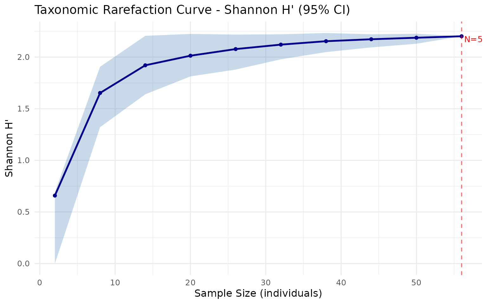
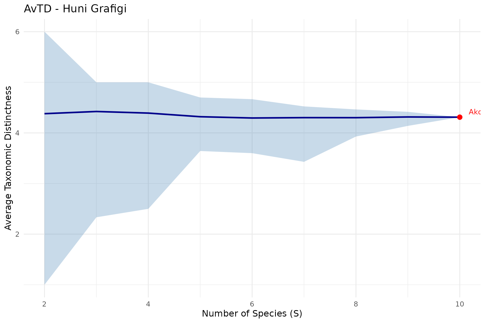

Bu Paket Ne Ise Yarar?
taxdiv paketi, ekolojik topluluklarda taksonomik cesitliligi hesaplamak icin yazilmis bir R paketidir.
Klasik cesitlilik indeksleri (Shannon, Simpson) sadece tur bolluklarini dikkate alir. Ancak iki toplulukta ayni sayida tur olsa bile, birinde tum turler ayni familyadan, digerinde farkli takimlardan olabilir. Taksonomik cesitlilik indeksleri bu farki yakalayabilir.
Pakette uc ana yaklasim vardir:
- Klasik indeksler: Shannon ve Simpson
- Clarke & Warwick taksonomik ayirt edicilik: Delta, Delta*, AvTD, VarTD
- Ozkan (2018; 2022) Deng entropisi tabanli: pTO (uTO, TO, uTO+, TO+) ve guclendirilmis tahmin ediciler
Ornek Veri: Akdeniz Ormani Toplulugu
Orneklerimizde 10 turlu hayali bir Akdeniz ormani toplulugu kullanacagiz. Her turun bolluk degeri (birey sayisi) ve 7 taksonomik seviyesi vardir.
# Tur bolluklari (ornek alanindaki birey sayisi)
topluluk <- c(
Quercus_coccifera = 25,
Quercus_infectoria = 18,
Pinus_brutia = 30,
Pinus_nigra = 12,
Juniperus_excelsa = 8,
Juniperus_oxycedrus = 5,
Cedrus_libani = 15,
Abies_cilicica = 7,
Fagus_orientalis = 20,
Carpinus_betulus = 10
)
# Taksonomik hiyerarsi (7 seviye: Tur, Cins, Familya, Takim, Sinif, Bolum, Alem)
agac <- build_tax_tree(
species = names(topluluk),
Genus = c("Quercus", "Quercus", "Pinus", "Pinus",
"Juniperus", "Juniperus", "Cedrus", "Abies",
"Fagus", "Carpinus"),
Family = c("Fagaceae", "Fagaceae", "Pinaceae", "Pinaceae",
"Cupressaceae", "Cupressaceae", "Pinaceae", "Pinaceae",
"Fagaceae", "Betulaceae"),
Order = c("Fagales", "Fagales", "Pinales", "Pinales",
"Pinales", "Pinales", "Pinales", "Pinales",
"Fagales", "Fagales"),
Class = c("Magnoliopsida", "Magnoliopsida", "Pinopsida", "Pinopsida",
"Pinopsida", "Pinopsida", "Pinopsida", "Pinopsida",
"Magnoliopsida", "Magnoliopsida"),
Phylum = c("Magnoliophyta", "Magnoliophyta", "Pinophyta", "Pinophyta",
"Pinophyta", "Pinophyta", "Pinophyta", "Pinophyta",
"Magnoliophyta", "Magnoliophyta"),
Kingdom = c("Plantae", "Plantae", "Plantae", "Plantae",
"Plantae", "Plantae", "Plantae", "Plantae",
"Plantae", "Plantae")
)
agac
#> Species Genus Family Order Class
#> 1 Quercus_coccifera Quercus Fagaceae Fagales Magnoliopsida
#> 2 Quercus_infectoria Quercus Fagaceae Fagales Magnoliopsida
#> 3 Pinus_brutia Pinus Pinaceae Pinales Pinopsida
#> 4 Pinus_nigra Pinus Pinaceae Pinales Pinopsida
#> 5 Juniperus_excelsa Juniperus Cupressaceae Pinales Pinopsida
#> 6 Juniperus_oxycedrus Juniperus Cupressaceae Pinales Pinopsida
#> 7 Cedrus_libani Cedrus Pinaceae Pinales Pinopsida
#> 8 Abies_cilicica Abies Pinaceae Pinales Pinopsida
#> 9 Fagus_orientalis Fagus Fagaceae Fagales Magnoliopsida
#> 10 Carpinus_betulus Carpinus Betulaceae Fagales Magnoliopsida
#> Phylum Kingdom
#> 1 Magnoliophyta Plantae
#> 2 Magnoliophyta Plantae
#> 3 Pinophyta Plantae
#> 4 Pinophyta Plantae
#> 5 Pinophyta Plantae
#> 6 Pinophyta Plantae
#> 7 Pinophyta Plantae
#> 8 Pinophyta Plantae
#> 9 Magnoliophyta Plantae
#> 10 Magnoliophyta Plantaebuild_tax_tree() fonksiyonu turleri ve taksonomik
seviyelerini bir data frame olarak dondurur. Ilk sutun tur isimleri,
sonrakiler en dusukten en yuksege sirali taksonomik ranklar (Cins ->
Familya -> Takim -> Sinif -> Bolum -> Alem).
Adim 1: Klasik Cesitlilik Indeksleri
Shannon ve Simpson indeksleri sadece tur bolluklarini kullanir. Taksonomik yapiyi dikkate almazlar.
# Shannon cesitliligi (dogal logaritma)
H <- shannon(topluluk)
cat("Shannon H':", round(H, 4), "\n")
#> Shannon H': 2.1692
# Simpson indeksleri
D <- simpson(topluluk, type = "dominance") # Baskinlik
GS <- simpson(topluluk, type = "gini_simpson") # 1 - D
inv_D <- simpson(topluluk, type = "inverse") # 1 / D
cat("Simpson baskinlik (D):", round(D, 4), "\n")
#> Simpson baskinlik (D): 0.1269
cat("Gini-Simpson (1-D):", round(GS, 4), "\n")
#> Gini-Simpson (1-D): 0.8731
cat("Ters Simpson (1/D):", round(inv_D, 4), "\n")
#> Ters Simpson (1/D): 7.8782Yorum: Shannon degeri ne kadar yuksekse topluluk o kadar cesitlidir. Simpson baskinlik degeri ne kadar dusukse o kadar iyi dagilim vardir.
Shannon ve Simpson icin correction = "chao_shen"
parametresiyle Chao & Shen (2003) yanliliksiz tahminci
kullanilabilir:
Adim 2: Taksonomik Mesafe Matrisi
Taksonomik cesitliligi hesaplamadan once turler arasi taksonomik mesafeyi hesaplamamiz gerekir. Bu mesafe, iki turun taksonomik hiyerarsideki ilk ortak atalarinin seviyesine gore belirlenir.
mesafe <- tax_distance_matrix(agac)
round(mesafe, 1)
#> Quercus_coccifera Quercus_infectoria Pinus_brutia
#> Quercus_coccifera 0 1 6
#> Quercus_infectoria 1 0 6
#> Pinus_brutia 6 6 0
#> Pinus_nigra 6 6 1
#> Juniperus_excelsa 6 6 3
#> Juniperus_oxycedrus 6 6 3
#> Cedrus_libani 6 6 2
#> Abies_cilicica 6 6 2
#> Fagus_orientalis 2 2 6
#> Carpinus_betulus 3 3 6
#> Pinus_nigra Juniperus_excelsa Juniperus_oxycedrus
#> Quercus_coccifera 6 6 6
#> Quercus_infectoria 6 6 6
#> Pinus_brutia 1 3 3
#> Pinus_nigra 0 3 3
#> Juniperus_excelsa 3 0 1
#> Juniperus_oxycedrus 3 1 0
#> Cedrus_libani 2 3 3
#> Abies_cilicica 2 3 3
#> Fagus_orientalis 6 6 6
#> Carpinus_betulus 6 6 6
#> Cedrus_libani Abies_cilicica Fagus_orientalis
#> Quercus_coccifera 6 6 2
#> Quercus_infectoria 6 6 2
#> Pinus_brutia 2 2 6
#> Pinus_nigra 2 2 6
#> Juniperus_excelsa 3 3 6
#> Juniperus_oxycedrus 3 3 6
#> Cedrus_libani 0 2 6
#> Abies_cilicica 2 0 6
#> Fagus_orientalis 6 6 0
#> Carpinus_betulus 6 6 3
#> Carpinus_betulus
#> Quercus_coccifera 3
#> Quercus_infectoria 3
#> Pinus_brutia 6
#> Pinus_nigra 6
#> Juniperus_excelsa 6
#> Juniperus_oxycedrus 6
#> Cedrus_libani 6
#> Abies_cilicica 6
#> Fagus_orientalis 3
#> Carpinus_betulus 0Nasil okunur:
- 0 = Ayni tur (kosegen)
- 1 = Ayni cins, farkli tur (ornegin Pinus brutia - Pinus nigra)
- 2 = Ayni familya, farkli cins (ornegin Pinus - Cedrus, ikisi de Pinaceae)
- 3 = Ayni takim, farkli familya (ornegin Pinaceae - Cupressaceae, ikisi de Pinales)
- 6 = Farkli sinif (Magnoliopsida vs Pinopsida — en uzak mesafe)
Adim 3: Clarke & Warwick Taksonomik Ayirt Edicilik
Clarke & Warwick (1998) dort farkli olcu onerir:
# Delta: Taksonomik cesitlilik (bolluk agirlikli)
d <- delta(topluluk, agac)
cat("Delta (taksonomik cesitlilik):", round(d, 4), "\n")
#> Delta (taksonomik cesitlilik): 3.8246
# Delta*: Taksonomik ayirt edicilik (bolluk agirlikli, ayni tur ciftleri haric)
ds <- delta_star(topluluk, agac)
cat("Delta* (taksonomik ayirt edicilik):", round(ds, 4), "\n")
#> Delta* (taksonomik ayirt edicilik): 4.3515
# AvTD (Delta+): Ortalama taksonomik ayirt edicilik (sadece tur listesi, bolluk onemsiz)
turler <- names(topluluk)
avg_td <- avtd(turler, agac)
cat("AvTD (Delta+):", round(avg_td, 4), "\n")
#> AvTD (Delta+): 4.3111
# VarTD (Lambda+): Taksonomik ayirt edicilik varyasyonu
var_td <- vartd(turler, agac)
cat("VarTD (Lambda+):", round(var_td, 4), "\n")
#> VarTD (Lambda+): 3.5032Onemli fark:
- Delta ve Delta*: Bolluga bagimli — tur sayilari onemli
- AvTD ve VarTD: Bolluktan bagimsiz — sadece turlerin var/yok bilgisini kullanir
Adim 4: Deng Entropisi ve Ozkan pTO (Islem 1)
Deng (2016) entropisi, Shannon entropisinin Dempster-Shafer kanit teorisi uzerinden genellenmis halidir. Her taksonomik seviyede gruplarin tur sayisini (fokal eleman boyutu) dikkate alir.
Ozkan (2018) Deng entropisini kullanarak dort olcu tanimlar:
- uTO: Agirliksiz taksonomik cesitlilik
- TO: Agirlikli taksonomik cesitlilik (seviye agirliklari ile)
- uTO+: Agirliksiz taksonomik uzaklik (sadece tur listesi)
- TO+: Agirlikli taksonomik uzaklik
sonuc <- ozkan_pto(topluluk, agac)
cat("uTO (agirliksiz cesitlilik):", round(sonuc$uTO, 4), "\n")
#> uTO (agirliksiz cesitlilik): 8.6804
cat("TO (agirlikli cesitlilik):", round(sonuc$TO, 4), "\n")
#> TO (agirlikli cesitlilik): 15.2596
cat("uTO+ (agirliksiz uzaklik):", round(sonuc$uTO_plus, 4), "\n")
#> uTO+ (agirliksiz uzaklik): 8.9019
cat("TO+ (agirlikli uzaklik):", round(sonuc$TO_plus, 4), "\n")
#> TO+ (agirlikli uzaklik): 15.4812Her taksonomik seviyedeki Deng entropisi degerleri:
cat("Taksonomik seviye bazinda Deng entropisi:\n")
#> Taksonomik seviye bazinda Deng entropisi:
for (i in seq_along(sonuc$Ed_levels)) {
cat(" ", names(sonuc$Ed_levels)[i], ":",
round(sonuc$Ed_levels[i], 4), "\n")
}
#> Species : 2.3026
#> Genus : 2.5459
#> Family : 3.1666
#> Order : 4.2421
#> Class : 4.2421
#> Phylum : 4.2421
#> Kingdom : 0max_level parametresi
ozkan_pto() fonksiyonunda max_level
parametresi ile hesaplamada kullanilacak maksimum taksonomik seviye
sinirlanabilir. Varsayilan NULL tum seviyeleri kullanir.
"auto" bilgi icermeyen seviyeleri otomatik eler:
# Tum seviyeler (varsayilan)
r_full <- ozkan_pto(topluluk, agac, max_level = NULL)
cat("Tum seviyeler: uTO =", round(r_full$uTO, 4),
" TO =", round(r_full$TO, 4), "\n")
#> Tum seviyeler: uTO = 8.6804 TO = 15.2596
# Otomatik seviye secimi
r_auto <- ozkan_pto(topluluk, agac, max_level = "auto")
cat("Auto seviye: uTO =", round(r_auto$uTO, 4),
" TO =", round(r_auto$TO, 4), "\n")
#> Auto seviye: uTO = 8.6804 TO = 15.2596
cat("Bilgilendirici seviye:", r_auto$max_informative_level, "\n")
#> Bilgilendirici seviye: 5
# Sadece ilk 3 seviye
r_3 <- ozkan_pto(topluluk, agac, max_level = 3)
cat("Ilk 3 seviye: uTO =", round(r_3$uTO, 4),
" TO =", round(r_3$TO, 4), "\n")
#> Ilk 3 seviye: uTO = 8.6804 TO = 15.25968 Bilesenli Cikti
max_level kullanildiginda ozkan_pto() hem
standart hem max_level degerlerini dondurur:
sonuc8 <- ozkan_pto(topluluk, agac, max_level = "auto")
cat("Standart: uTO =", round(sonuc8$uTO, 4),
" TO =", round(sonuc8$TO, 4), "\n")
#> Standart: uTO = 8.6804 TO = 15.2596
cat("Max-level: uTO_max =", round(sonuc8$uTO_max, 4),
" TO_max =", round(sonuc8$TO_max, 4), "\n")
#> Max-level: uTO_max = 8.6804 TO_max = 15.2596
cat("Bilgilendirici seviye sayisi:", sonuc8$max_informative_level, "\n")
#> Bilgilendirici seviye sayisi: 5pto_components() ile tek satirda alabilirsiniz:
pto_components(topluluk, agac)
#> uTO TO uTO_plus TO_plus uTO_max TO_max
#> 8.680386 15.259632 8.901929 15.481180 8.680386 15.259632
#> uTO_plus_max TO_plus_max
#> 8.901929 15.481180Adim 5: Stokastik Yeniden Ornekleme (Islem 2 / Run 2)
Islem 1 tum turleri oldugu gibi kullanir. Peki topluluk yapisini degistirirsek cesitlilik nasil etkilenir?
Islem 2 bunu test eder: Her turde %50 olasilikla dahil/haric birakarak rastgele alt topluluklar olusturur. Birden fazla iterasyon yapilir ve maksimum pTO degeri alinir.
islem2 <- ozkan_pto_resample(topluluk, agac, n_iter = 101, seed = 42)
cat("=== Islem 1 (deterministik) ===\n")
#> === Islem 1 (deterministik) ===
cat("uTO+:", round(islem2$uTO_plus_det, 4), "\n")
#> uTO+: 8.9019
cat("TO+: ", round(islem2$TO_plus_det, 4), "\n")
#> TO+: 15.4812
cat("uTO: ", round(islem2$uTO_det, 4), "\n")
#> uTO: 8.6804
cat("TO: ", round(islem2$TO_det, 4), "\n\n")
#> TO: 15.2596
cat("=== Islem 2 (maksimum,", islem2$n_iter, "iterasyon) ===\n")
#> === Islem 2 (maksimum, 101 iterasyon) ===
cat("uTO+:", round(islem2$uTO_plus_max, 4), "\n")
#> uTO+: 9.4113
cat("TO+: ", round(islem2$TO_plus_max, 4), "\n")
#> TO+: 15.9905
cat("uTO: ", round(islem2$uTO_max, 4), "\n")
#> uTO: 8.9886
cat("TO: ", round(islem2$TO_max, 4), "\n")
#> TO: 15.5677Islem 2 degerleri her zaman Islem 1’e esit veya buyuktur, cunku deterministik hesaplama ilk iterasyon olarak dahil edilir.
Adim 6: Duyarlilik Analizi (Islem 3 / Run 3)
Islem 3, Islem 2 sonuclarina gore tur bazli dahil etme olasiliklari hesaplar. Cesitlilige daha cok katki saglayan turler farkli olasilikla dahil edilir.
islem3 <- ozkan_pto_sensitivity(topluluk, agac, islem2, seed = 123)
cat("=== Islem 3 (duyarlilik analizi) ===\n")
#> === Islem 3 (duyarlilik analizi) ===
cat("Islem 3 max uTO+:", round(islem3$run3_uTO_plus_max, 4), "\n")
#> Islem 3 max uTO+: 9.4113
cat("Islem 3 max TO+: ", round(islem3$run3_TO_plus_max, 4), "\n\n")
#> Islem 3 max TO+: 15.9905
cat("=== Genel maksimum (Islem 1 + 2 + 3) ===\n")
#> === Genel maksimum (Islem 1 + 2 + 3) ===
cat("uTO+:", round(islem3$uTO_plus_max, 4), "\n")
#> uTO+: 9.4113
cat("TO+: ", round(islem3$TO_plus_max, 4), "\n")
#> TO+: 15.9905
cat("uTO: ", round(islem3$uTO_max, 4), "\n")
#> uTO: 9.0047
cat("TO: ", round(islem3$TO_max, 4), "\n")
#> TO: 15.5839Tur Dahil Etme Olasiliklari
Her turun Islem 3’te dahil edilme olasiligi:
olasiliklar <- islem3$species_probs
veri_cercevesi <- data.frame(
Tur = names(olasiliklar),
Olasilik = round(olasiliklar, 4)
)
print(veri_cercevesi, row.names = FALSE)
#> Tur Olasilik
#> Quercus_coccifera 0.8725
#> Quercus_infectoria 0.8725
#> Pinus_brutia 0.9000
#> Pinus_nigra 0.9000
#> Juniperus_excelsa 0.9000
#> Juniperus_oxycedrus 0.9000
#> Cedrus_libani 0.9000
#> Abies_cilicica 0.9000
#> Fagus_orientalis 0.8725
#> Carpinus_betulus 0.8725Adim 7: Tam Pipeline (ozkan_pto_full)
ozkan_pto_full() fonksiyonu uc islemi tek satirda
calistirir:
tam <- ozkan_pto_full(topluluk, agac, n_iter = 101, seed = 42)
cat("Pipeline: Islem 1 -> Islem 2 -> Islem 3\n\n")
#> Pipeline: Islem 1 -> Islem 2 -> Islem 3
cat(" uTO+ TO+ uTO TO\n")
#> uTO+ TO+ uTO TO
cat("Islem 1:", sprintf("%9.4f %9.4f %9.4f %9.4f",
tam$run1$uTO_plus, tam$run1$TO_plus,
tam$run1$uTO, tam$run1$TO), "\n")
#> Islem 1: 8.9019 15.4812 8.6804 15.2596
cat("Islem 2:", sprintf("%9.4f %9.4f %9.4f %9.4f",
tam$run2$uTO_plus_max, tam$run2$TO_plus_max,
tam$run2$uTO_max, tam$run2$TO_max), "\n")
#> Islem 2: 9.4113 15.9905 8.9886 15.5677
cat("Islem 3:", sprintf("%9.4f %9.4f %9.4f %9.4f",
tam$run3$uTO_plus_max, tam$run3$TO_plus_max,
tam$run3$uTO_max, tam$run3$TO_max), "\n")
#> Islem 3: 9.4113 15.9905 9.0413 15.6205Her asama bir oncekine esit veya daha buyuk deger uretir.
Adim 8: Jackknife Yanliliksiz Tahmin
ozkan_pto_jackknife() birer birer tur cikararak
(leave-one-out) yanliliksiz pTO tahmini hesaplar:
jk <- ozkan_pto_jackknife(topluluk, agac)
cat("Tam sonuc uTO+:", round(jk$full_result$uTO_plus, 4), "\n")
#> Tam sonuc uTO+: 8.9019
cat("Tam sonuc TO+: ", round(jk$full_result$TO_plus, 4), "\n")
#> Tam sonuc TO+: 15.4812
cat("Mutlu turler: ", jk$n_happy, "/", jk$n_happy + jk$n_unhappy, "\n\n")
#> Mutlu turler: 4 / 10
# Her turun cikarildiginda sonuc nasil degisiyor?
head(jk$jackknife_results)
#> species uTO_plus TO_plus uTO TO is_happy
#> 1 Quercus_coccifera 8.733962 15.31321 8.559784 15.13901 TRUE
#> 2 Quercus_infectoria 8.733962 15.31321 8.582377 15.16162 TRUE
#> 3 Pinus_brutia 9.285601 15.86485 8.875835 15.45488 FALSE
#> 4 Pinus_nigra 9.285601 15.86485 8.843811 15.42306 FALSE
#> 5 Juniperus_excelsa 9.112068 15.69132 8.731124 15.31037 FALSE
#> 6 Juniperus_oxycedrus 9.112068 15.69132 8.764605 15.34385 FALSEAdim 9: Toplu Analiz (batch_analysis)
Birden fazla ornek alani ayni anda analiz etmek icin
batch_analysis() kullanilir. Her ornek alan icin tur sayisi
ve 14 cesitlilik indeksini otomatik hesaplar:
# Coklu ornek alan verisi
veri <- data.frame(
Site = rep(c("Alan_A", "Alan_B"), each = 5),
Species = rep(c("Pinus_brutia", "Pinus_nigra", "Quercus_coccifera",
"Juniperus_excelsa", "Cedrus_libani"), 2),
Abundance = c(30, 12, 25, 8, 15, 5, 40, 10, 3, 2),
Genus = rep(c("Pinus", "Pinus", "Quercus", "Juniperus", "Cedrus"), 2),
Family = rep(c("Pinaceae", "Pinaceae", "Fagaceae",
"Cupressaceae", "Pinaceae"), 2),
Order = rep(c("Pinales", "Pinales", "Fagales", "Pinales", "Pinales"), 2)
)
sonuc_batch <- batch_analysis(veri)
print(sonuc_batch)
#> taxdiv -- Batch Analysis
#> Sites: 2
#> Indices: 14
#>
#> Site N_Species Shannon Simpson Delta Delta_star AvTD VarTD uTO
#> Alan_A 5 1.504443 0.758272 1.963296 2.560404 2.6 0.44 5.444330
#> Alan_B 5 1.039172 0.517222 1.301130 2.473684 2.6 0.44 4.330512
#> TO uTO_plus TO_plus uTO_max TO_max uTO_plus_max TO_plus_max
#> 8.622250 5.845169 9.023223 5.444330 8.622250 5.845169 9.023223
#> 7.501388 5.845169 9.023223 5.105595 8.282063 5.845169 9.023223Cikti 16 sutundan olusur: Site, N_Species ve 14 cesitlilik indeksi.
Adim 10: Rarefaction (Seyreltme)
Rarefaction, farkli orneklem buyukluklerinin cesitlilik tahminleri uzerindeki etkisini degerlendirir. Egri duzlestiyse orneklemeniz yeterlidir:
rare <- rarefaction_taxonomic(topluluk, agac,
index = "shannon",
steps = 10, n_boot = 100, seed = 42)
cat("Rarefaction sonuclari (Shannon):\n")
#> Rarefaction sonuclari (Shannon):
print(round(rare, 4))
#> taxdiv -- Rarefaction Curve
#> Index: shannon
#> Total N: 150
#> Bootstrap: 100 replicates
#> CI: 95 %
#> Steps: 10
#>
#> sample_size mean lower upper sd
#> 5 1.3380 0.9503 1.6094 0.2354
#> 21 1.9429 1.5955 2.1907 0.1521
#> 37 2.0616 1.8675 2.1989 0.0926
#> 53 2.1004 1.9616 2.2042 0.0640
#> 69 2.1268 2.0265 2.1993 0.0470
#> 86 2.1421 2.0617 2.2006 0.0375
#> 102 2.1525 2.0814 2.1980 0.0298
#> 118 2.1596 2.1205 2.2018 0.0214
#> 134 2.1664 2.1307 2.1929 0.0159
#> 150 2.1692 2.1692 2.1692 0.0000Adim 11: Simuelasyon ve Huni Grafigi (Funnel Plot)
simulate_td() ile belirli bir tur havuzundan rastgele
topluluklar olusturarak beklenen indeks dagilimini hesaplayabilirsiniz.
Bu dagilim huni grafigi ile gorsellestirilerek gercek toplulugun
beklenen aralikta olup olmadigi degerlendirilir:
sim <- simulate_td(agac, n_sim = 100, seed = 42)
summary(sim)
#> s mean_avtd lower_avtd upper_avtd mean_vartd
#> Min. : 2 Min. :4.295 Min. :1.000 Min. :4.311 Min. :0.000
#> 1st Qu.: 4 1st Qu.:4.302 1st Qu.:2.500 1st Qu.:4.464 1st Qu.:3.213
#> Median : 6 Median :4.315 Median :3.600 Median :4.667 Median :3.468
#> Mean : 6 Mean :4.338 Mean :3.209 Mean :4.787 Mean :2.930
#> 3rd Qu.: 8 3rd Qu.:4.380 3rd Qu.:3.929 3rd Qu.:5.000 3rd Qu.:3.486
#> Max. :10 Max. :4.423 Max. :4.311 Max. :6.000 Max. :3.505
#> lower_vartd upper_vartd
#> Min. :0.0000 Min. :0.000
#> 1st Qu.:0.5833 1st Qu.:3.731
#> Median :2.7556 Median :4.032
#> Mean :2.1336 Mean :3.841
#> 3rd Qu.:3.1671 3rd Qu.:4.596
#> Max. :3.5032 Max. :5.556Gorsellestime
taxdiv paketi ggplot2 tabanli yedi ozel gorsellestirme fonksiyonu sunar. Her biri farkli bir analitik soruya cevap verir.
Taksonomik Agac (Dendogram)
Turlerin taksonomik yakinligini dendogram olarak gosterir:
plot_taxonomic_tree(agac, community = topluluk,
color_by = "Family", label_size = 3.5,
title = "Akdeniz Ormani - Familya Bazinda")
Nasil okunur: Ayni daldan cikan turler taksonomik olarak yakindir. Parantez icindeki sayilar bolluk degerleridir. Renkler familyalari gosterir. Uzun dallar daha buyuk taksonomik mesafeyi temsil eder.
Taksonomik Mesafe Isi Haritasi (Heatmap)
Turler arasi mesafe matrisini renkli olarak gosterir:
plot_heatmap(agac, label_size = 2.8,
title = "Taksonomik Mesafe Isi Haritasi")
Nasil okunur: Koyu kirmizi = uzak turler, beyaz = yakin turler. Her hucredeki sayi taksonomik mesafe degerini gosterir. Kosegen her zaman sifirdir.
Indeks Karsilastirma (Bar Plot)
Birden fazla toplulugu tum indeksler uzerinden karsilastirir. Ikinci bir topluluk olusturuyoruz: ayni turler ama bir tur baskin:
# Baskin topluluk: ayni turler, farkli bolluk dagilimi
baskin_topluluk <- c(
Quercus_coccifera = 80, Quercus_infectoria = 5,
Pinus_brutia = 3, Pinus_nigra = 2,
Juniperus_excelsa = 2, Juniperus_oxycedrus = 1,
Cedrus_libani = 3, Abies_cilicica = 1,
Fagus_orientalis = 2, Carpinus_betulus = 1
)
topluluklar <- list(
Cesitli = topluluk,
Baskin = baskin_topluluk
)
sonuc_plot <- compare_indices(topluluklar, agac, plot = TRUE)
sonuc_plot$plot
Nasil okunur: Bolluga bagimli indeksler (Shannon, Simpson, Delta, TO) iki topluluk arasinda belirgin farklilik gosterir. Bolluktan bagimsiz indeksler (AvTD, VarTD, uTO+, TO+) aynidir cunku iki toplulukta da ayni turler vardir — sadece bolluk dagilimi farklidir. Bu, her iki olcu turununun neden birlikte gerekli oldugunu gosterir.
Tablo ciktisi:
sonuc_plot$table
#> taxdiv -- Index Comparison
#> Communities: 2
#> Indices: Shannon, Simpson, Delta, Delta_star, AvTD, VarTD, uTO, TO, uTO_plus, TO_plus, uTO_max, TO_max, uTO_plus_max, TO_plus_max
#>
#> Community N_Species Shannon Simpson Delta Delta_star AvTD VarTD
#> Cesitli 10 2.169177 0.873067 3.824609 4.351456 4.311111 3.50321
#> Baskin 10 0.911571 0.354200 1.509495 4.219085 4.311111 3.50321
#> uTO TO uTO_plus TO_plus uTO_max TO_max uTO_plus_max TO_plus_max
#> 8.680386 15.25963 8.901929 15.48118 8.680386 15.25963 8.901929 15.48118
#> 6.162078 12.73918 8.901929 15.48118 6.162078 12.73918 8.901929 15.48118Islem 2 Iterasyon Grafigi
Her iterasyondaki pTO degerlerini gosterir:
plot_iteration(islem2, component = "TO",
title = "Islem 2 - TO Degerleri")
Nasil okunur:
- Gri noktalar: Her iterasyondaki deger (rastgele tur alt kumesi)
- Kirmizi cizgi: Deterministik (Islem 1) degeri
- Mavi cizgi: Tum iterasyonlar arasindaki maksimum
Dusuk noktalar = az tur dahil edildigi durumlar. Kirmizi cizginin ustundeki noktalar, bazi turlerin cikarilmasinin cesitliligi artirdigini gosterir.
Tur Katki Baloncuk Grafigi (Bubble Chart)
Her turun topluluk cesitliligine katkisini gosterir:
plot_bubble(topluluk, agac, color_by = "Family",
title = "Tur Katkilari - Familya Bazinda")
Nasil okunur:
- X ekseni: Bolluk (birey sayisi)
- Y ekseni: Ortalama taksonomik mesafe (diger turlere uzaklik)
- Balon boyutu: Katki orani (bolluk x mesafe)
- Sag ust koseteki turler cesitlilige en cok katki saglar (hem bol hem uzak)
Radar Grafigi (Spider Chart)
Birden fazla toplulugu tum indeksler uzerinden radar seklinde karsilastirir:
plot_radar(topluluklar, agac,
title = "Cesitli vs Baskin - Radar Karsilastirmasi")
#> Warning: Removed 2 rows containing missing values or values outside the scale range
#> (`geom_point()`).
Nasil okunur: Her eksen bir indeksi temsil eder. Degerler 0-1 arasinda normalize edilmistir. Buyuk alan = yuksek cesitlilik. Iki poligonun bolluk bagimsiz indekslerde ustuste binip bolluk bagimli indekslerde ayrilmasi, ayni tur havuzunun farkli dagilimlarini dogrular.
Seyreltme Egrisi (Rarefaction Curve)
Cesitlilik tahminlerinin orneklem buyuklugune gore degisimini gosterir:
plot_rarefaction(rare)
Nasil okunur: X ekseni orneklenen birey sayisi, Y ekseni tahmini cesitlilik indeksidir. Golgelenmis bant %95 bootstrap guven araligini gosterir. Egri duzlestiyse orneklemeniz yeterlidir. Sag kenardaki dik egri daha fazla ornekleme gerektigini gosterir.
Huni Grafigi (Funnel Plot)
Gercek toplulugu simule edilmis beklenen aralikla karsilastirir:
plot_funnel(sim, observed = data.frame(
site = "Akdeniz Ormani",
s = length(topluluk),
value = avg_td),
index = "avtd",
title = "AvTD - Huni Grafigi")
Nasil okunur: Gri bant beklenen aralik, kirmizi nokta gercek degerdir. Bant icinde ise topluluk beklenen cesitlilik araligindadir. Bantin disinda ise cesitlilik beklenenden onemli olcude farklidir.
Matematiksel Arka Plan
Bu bolum, paketteki indekslerin matematiksel formullerini ve birbirleriyle iliskilerini aciklar. Tez veya makale yazarken bu formullere ihtiyaciniz olacaktir.
Shannon Entropisi
Shannon (1948), bir sistemdeki belirsizligi olcmek icin su formulu onermistir:
- = toplam tur sayisi
- = . turun oransal bollugu ()
- = toplam birey sayisi
Shannon entropisi her turu bireysel bir olay olarak ele alir. Turler arasindaki akrabalik iliskilerini gormez.
Simpson Indeksi
Simpson (1949), rastgele secilen iki bireyin ayni turden olma olasiligini olcer:
Genellikle Gini-Simpson formu kullanilir:
Simpson, baskin turlere daha duyarlidir. Shannon ise nadir turlere daha fazla agirlik verir.
Clarke & Warwick: Taksonomik Ayirt Edicilik
Clarke & Warwick (1998) taksonomik hiyerarsiyi hesaba katan dort indeks tanimlamistir:
Delta (Taksonomik cesitlilik, bolluk agirlikli):
Delta+ (AvTD, sadece tur listesi):
Lambda+ (VarTD, varyasyon):
Burada , ve turleri arasindaki taksonomik mesafedir. Bu mesafe, iki turun taksonomik agacta ilk birlestigi seviyeye esittir (Cins = 1, Familya = 2, …, Alem = 6).
Onemli: ve bolluk bilgisi kullanmaz. Bu sayede farkli orneklem buyuklugundeki alanlari dogrudan karsilastirabilirsiniz (Clarke & Warwick, 1998, 2001).
Deng Entropisi
Deng (2016), Shannon entropisini Dempster-Shafer kanit teorisi (Dempster, 1967; Shafer, 1976) cercevesinde genellestirmistir. Temel fark: Shannon’da her olay (tur) atomiktir. Deng entropisinde olaylar kume yapisi icerebilir.
Bir taksonomik seviyedeki Deng entropisi:
- = o seviyedeki grup sayisi (ornegin familya sayisi)
- = . gruptaki turlerin oransal agirligi
- = . gruptaki tur sayisi (fokal eleman boyutu)
Shannon ile karsilastirma:
Shannon entropisinde kabul edilir (her tur tek basina bir olay). Bu durumda olur ve Deng entropisi Shannon’a indirgenir:
Yani Deng entropisi Shannon’in genellestirilmis halidir. Eger taksonomik gruplar 1’er turden olusuyorsa ikisi ayni sonucu verir.
Ozkan pTO Formulu
Ozkan (2018), Deng entropisini kullanarak dort bilesenden olusan bir taksonomik cesitlilik olcusu tanimlar.
Temel carpim (bir dilim icin):
- = aktif taksonomik seviye sayisi
- = tur seviyesindeki Deng entropisi
- = . seviyedeki Deng entropisi
- = seviye agirligi (agirliksiz icin , agirlikli icin )
pTO+ (Taksonomik mesafe, sadece Islem 1):
Sadece nk = 0 dilimini (tum turler dahil) kullanir. Bolluk bilgisine ihtiyac duymaz cunku tur listesiyle calisir.
pTO (Taksonomik cesitlilik, Islem 1 + 2 + 3):
Dilim proseduru (slicing): nk = 0, 1, …, n_s icin bollugu olan turler elenir. Her dilimde hayatta kalan turlerle Deng entropisi yeniden hesaplanir. Boylece bolluk bilgisi dolayli olarak sisteme girer.
Adim Adim Hesaplama Ornegi
Bu bolumde 5 turlu kucuk bir toplulugu elle adim adim hesaplayarak fonksiyonlarin arkasindaki mantigi gosteriyoruz.
Veri
# 5 turlu kucuk bir topluluk
ornek_topluluk <- c(
Pinus_nigra = 4,
Pinus_brutia = 3,
Quercus_cerris = 2,
Fagus_orientalis = 1,
Cedrus_libani = 2
)
ornek_agac <- build_tax_tree(
species = names(ornek_topluluk),
Genus = c("Pinus", "Pinus", "Quercus", "Fagus", "Cedrus"),
Family = c("Pinaceae", "Pinaceae", "Fagaceae", "Fagaceae", "Pinaceae"),
Order = c("Pinales", "Pinales", "Fagales", "Fagales", "Pinales")
)
cat("Topluluk:\n")
#> Topluluk:
print(ornek_topluluk)
#> Pinus_nigra Pinus_brutia Quercus_cerris Fagus_orientalis
#> 4 3 2 1
#> Cedrus_libani
#> 2
cat("\nTaksonomik agac:\n")
#>
#> Taksonomik agac:
print(ornek_agac)
#> Species Genus Family Order
#> 1 Pinus_nigra Pinus Pinaceae Pinales
#> 2 Pinus_brutia Pinus Pinaceae Pinales
#> 3 Quercus_cerris Quercus Fagaceae Fagales
#> 4 Fagus_orientalis Fagus Fagaceae Fagales
#> 5 Cedrus_libani Cedrus Pinaceae PinalesAdim 1: Shannon
# Toplam birey: 4 + 3 + 2 + 1 + 2 = 12
N <- sum(ornek_topluluk)
cat("Toplam birey (N):", N, "\n\n")
#> Toplam birey (N): 12
# Oransal bolluklar
p <- ornek_topluluk / N
cat("Oransal bolluklar (p_i):\n")
#> Oransal bolluklar (p_i):
for (i in seq_along(p)) {
cat(" ", names(p)[i], ":", round(p[i], 4), "\n")
}
#> Pinus_nigra : 0.3333
#> Pinus_brutia : 0.25
#> Quercus_cerris : 0.1667
#> Fagus_orientalis : 0.0833
#> Cedrus_libani : 0.1667
# Shannon: H' = -sum(p * ln(p))
H_elle <- -sum(p * log(p))
H_fonksiyon <- shannon(ornek_topluluk)
cat("\nElle hesaplanan H':", round(H_elle, 4), "\n")
#>
#> Elle hesaplanan H': 1.5171
cat("shannon() sonucu: ", round(H_fonksiyon, 4), "\n")
#> shannon() sonucu: 1.5171Adim 2: Taksonomik Mesafe
# Mesafe matrisi
m <- tax_distance_matrix(ornek_agac)
cat("Taksonomik mesafe matrisi:\n")
#> Taksonomik mesafe matrisi:
print(round(m, 1))
#> Pinus_nigra Pinus_brutia Quercus_cerris Fagus_orientalis
#> Pinus_nigra 0 1 3 3
#> Pinus_brutia 1 0 3 3
#> Quercus_cerris 3 3 0 2
#> Fagus_orientalis 3 3 2 0
#> Cedrus_libani 2 2 3 3
#> Cedrus_libani
#> Pinus_nigra 2
#> Pinus_brutia 2
#> Quercus_cerris 3
#> Fagus_orientalis 3
#> Cedrus_libani 0
cat("\nOrnek yorumlar:\n")
#>
#> Ornek yorumlar:
cat(" Pinus_nigra - Pinus_brutia: Ayni cins -> mesafe = 1\n")
#> Pinus_nigra - Pinus_brutia: Ayni cins -> mesafe = 1
cat(" Pinus_nigra - Cedrus_libani: Ayni familya (Pinaceae) -> mesafe = 2\n")
#> Pinus_nigra - Cedrus_libani: Ayni familya (Pinaceae) -> mesafe = 2
cat(" Pinus_nigra - Quercus_cerris: Farkli takim (Pinales vs Fagales) -> mesafe = 3\n")
#> Pinus_nigra - Quercus_cerris: Farkli takim (Pinales vs Fagales) -> mesafe = 3Adim 3: AvTD (Elle)
# AvTD = tum tur ciftleri arasindaki ortalama mesafe
# S = 5, S*(S-1)/2 = 10 cift
S <- length(ornek_topluluk)
cift_sayisi <- S * (S - 1) / 2
cat("Tur sayisi (S):", S, "\n")
#> Tur sayisi (S): 5
cat("Cift sayisi:", cift_sayisi, "\n\n")
#> Cift sayisi: 10
# Tum ciftlerin mesafelerini topla
toplam_mesafe <- 0
for (i in 1:(S - 1)) {
for (j in (i + 1):S) {
d_ij <- m[i, j]
cat(" ", rownames(m)[i], "-", colnames(m)[j], ":", d_ij, "\n")
toplam_mesafe <- toplam_mesafe + d_ij
}
}
#> Pinus_nigra - Pinus_brutia : 1
#> Pinus_nigra - Quercus_cerris : 3
#> Pinus_nigra - Fagus_orientalis : 3
#> Pinus_nigra - Cedrus_libani : 2
#> Pinus_brutia - Quercus_cerris : 3
#> Pinus_brutia - Fagus_orientalis : 3
#> Pinus_brutia - Cedrus_libani : 2
#> Quercus_cerris - Fagus_orientalis : 2
#> Quercus_cerris - Cedrus_libani : 3
#> Fagus_orientalis - Cedrus_libani : 3
avtd_elle <- toplam_mesafe / cift_sayisi
avtd_fonksiyon <- avtd(names(ornek_topluluk), ornek_agac)
cat("\nToplam mesafe:", toplam_mesafe, "\n")
#>
#> Toplam mesafe: 25
cat("Elle hesaplanan AvTD:", round(avtd_elle, 4), "\n")
#> Elle hesaplanan AvTD: 2.5
cat("avtd() sonucu: ", round(avtd_fonksiyon, 4), "\n")
#> avtd() sonucu: 2.5Adim 4: Deng Entropisi (Tur Seviyesinde)
# Tur seviyesinde: her tur tek basina bir grup (|F_i| = 1)
# Esit agirlik: m_i = 1/S = 1/5 = 0.2
# Ed = -sum(m_i * ln(m_i / (2^1 - 1))) = -sum(0.2 * ln(0.2)) = ln(5)
Ed_tur <- log(S)
cat("Tur seviyesinde Deng entropisi:\n")
#> Tur seviyesinde Deng entropisi:
cat(" Ed_species = ln(S) = ln(", S, ") =", round(Ed_tur, 4), "\n")
#> Ed_species = ln(S) = ln( 5 ) = 1.6094
cat(" (Bu Shannon entropisiyle ayni, cunku |F_i| = 1)\n\n")
#> (Bu Shannon entropisiyle ayni, cunku |F_i| = 1)
# Cins seviyesinde: Pinus(2 tur), Quercus(1), Fagus(1), Cedrus(1)
# 4 grup, esit agirlikli: m_i = grup_tur_sayisi / toplam_tur_sayisi
cat("Cins seviyesinde:\n")
#> Cins seviyesinde:
cat(" Pinus: 2 tur, Quercus: 1 tur, Fagus: 1 tur, Cedrus: 1 tur\n")
#> Pinus: 2 tur, Quercus: 1 tur, Fagus: 1 tur, Cedrus: 1 tur
cat(" m_Pinus = 2/5 = 0.4, |F| = 2\n")
#> m_Pinus = 2/5 = 0.4, |F| = 2
cat(" m_diger = 1/5 = 0.2, |F| = 1\n\n")
#> m_diger = 1/5 = 0.2, |F| = 1
# Ed = -(0.4 * ln(0.4 / (2^2 - 1))) - 3*(0.2 * ln(0.2 / (2^1 - 1)))
Ed_cins <- -(0.4 * log(0.4 / (2^2 - 1))) - 3 * (0.2 * log(0.2 / (2^1 - 1)))
cat(" Ed_genus = -(0.4 * ln(0.4/3)) - 3*(0.2 * ln(0.2/1))\n")
#> Ed_genus = -(0.4 * ln(0.4/3)) - 3*(0.2 * ln(0.2/1))
cat(" =", round(Ed_cins, 4), "\n")
#> = 1.7716Adim 5: Ozkan pTO
# Fonksiyonla hesapla
pto_sonuc <- ozkan_pto(ornek_topluluk, ornek_agac)
cat("Ozkan pTO sonuclari:\n")
#> Ozkan pTO sonuclari:
cat(" uTO =", round(pto_sonuc$uTO, 4), "\n")
#> uTO = 5.4045
cat(" TO =", round(pto_sonuc$TO, 4), "\n")
#> TO = 8.5796
cat(" uTO+ =", round(pto_sonuc$uTO_plus, 4), "\n")
#> uTO+ = 5.9881
cat(" TO+ =", round(pto_sonuc$TO_plus, 4), "\n\n")
#> TO+ = 9.1662
cat("Seviye bazinda Deng entropisi:\n")
#> Seviye bazinda Deng entropisi:
for (i in seq_along(pto_sonuc$Ed_levels)) {
cat(" ", names(pto_sonuc$Ed_levels)[i], ":",
round(pto_sonuc$Ed_levels[i], 4), "\n")
}
#> Species : 1.6094
#> Genus : 1.7716
#> Family : 2.28
#> Order : 2.28Fonksiyon Listesi
Klasik Indeksler
| Fonksiyon | Ne yapar |
|---|---|
shannon() |
Shannon cesitlilik indeksi (correction destekli) |
simpson() |
Simpson indeksleri (baskinlik, Gini-Simpson, ters Simpson) |
Clarke & Warwick Taksonomik Ayirt Edicilik
| Fonksiyon | Ne yapar |
|---|---|
delta() |
Delta — taksonomik cesitlilik (bolluk agirlikli) |
delta_star() |
Delta* — taksonomik ayirt edicilik |
avtd() |
AvTD / Delta+ — ortalama taksonomik ayirt edicilik |
vartd() |
VarTD / Lambda+ — taksonomik ayirt edicilik varyasyonu |
Ozkan pTO (Deng Entropisi)
| Fonksiyon | Ne yapar |
|---|---|
ozkan_pto() |
Islem 1: pTO hesaplama (max_level destekli, 8 cikti) |
pto_components() |
pTO dort/sekiz bileseni tek satirda |
deng_entropy_level() |
Belirli bir taksonomik seviyede Deng entropisi |
Ozkan pTO Pipeline
| Fonksiyon | Ne yapar |
|---|---|
ozkan_pto_resample() |
Islem 2: stokastik yeniden ornekleme |
ozkan_pto_sensitivity() |
Islem 3: duyarlilik analizi |
ozkan_pto_full() |
Islem 1+2+3 tam pipeline tek satirda |
ozkan_pto_jackknife() |
Leave-one-out jackknife yanliliksiz tahmin |
Toplu Analiz ve Karsilastirma
| Fonksiyon | Ne yapar |
|---|---|
batch_analysis() |
Coklu ornek alan toplu analizi (16 sutun cikti) |
compare_indices() |
Tum indeksleri yan yana karsilastirir |
Simulasyon ve Rarefaction
| Fonksiyon | Ne yapar |
|---|---|
simulate_td() |
Huni grafigi icin null dagilim simulasyonu |
rarefaction_taxonomic() |
Taksonomik cesitlilik icin seyreltme egrisi |
Gorsellestime (7 plot tipi)
| Fonksiyon | Ne yapar |
|---|---|
plot_taxonomic_tree() |
Taksonomik agac dendogrami |
plot_heatmap() |
Taksonomik mesafe isi haritasi |
plot_funnel() |
Huni grafigi (beklenen aralik) |
plot_iteration() |
Islem 2/3 iterasyon grafigi |
plot_bubble() |
Tur katkilari balon grafigi |
plot_radar() |
Radar/orumcek grafigi |
plot_rarefaction() |
Seyreltme egrisi (guven araliklariyla) |
Yardimci Fonksiyonlar
| Fonksiyon | Ne yapar |
|---|---|
build_tax_tree() |
Taksonomik hiyerarsi tablosu olusturur |
tax_distance_matrix() |
Turler arasi taksonomik mesafe matrisi |
Kaynaklar
Klasik Cesitlilik Indeksleri
- Shannon, C.E. (1948). A mathematical theory of communication. Bell System Technical Journal, 27, 379-423.
- Simpson, E.H. (1949). Measurement of diversity. Nature, 163, 688.
Taksonomik Farklilik
- Warwick, R.M. & Clarke, K.R. (1995). New ‘biodiversity’ measures reveal a decrease in taxonomic distinctness with increasing stress. Marine Ecology Progress Series, 129, 301-305.
- Clarke, K.R. & Warwick, R.M. (1998). A taxonomic distinctness index and its statistical properties. Journal of Applied Ecology, 35, 523-531.
- Clarke, K.R. & Warwick, R.M. (1999). The taxonomic distinctness measure of biodiversity: weighting of step lengths between hierarchical levels. Marine Ecology Progress Series, 184, 21-29.
- Clarke, K.R. & Warwick, R.M. (2001). A further biodiversity index applicable to species lists: variation in taxonomic distinctness. Marine Ecology Progress Series, 216, 265-278.
Deng Entropisi ve Kanit Teorisi
- Dempster, A.P. (1967). Upper and lower probabilities induced by a multivalued mapping. The Annals of Mathematical Statistics, 38, 325-339.
- Shafer, G. (1976). A Mathematical Theory of Evidence. Princeton University Press.
- Deng, Y. (2016). Deng entropy. Chaos, Solitons & Fractals, 91, 549-553.
Ozkan pTO Indeksi
- Ozkan, K. (2018). Yeni bir taksonomik cesitlilik olcusu onerisi. Turkish Journal of Forestry, 19(4), 336-346. DOI: 10.18182/tjf.441061
- Ozkan, K. & Mert, A. (2022). Deng entropisi tabanli taksonomik cesitlilik olculerinin karsilastirilmasi ve guclendirilmis tahmin edicilerin tanitilmasi. FORESTIST, 72(2). DOI: 10.5152/forestist.2021.21025
Yanliliksiz Tahmin
- Chao, A. & Shen, T.J. (2003). Nonparametric estimation of Shannon’s index of diversity when there are unseen species in sample. Environmental and Ecological Statistics, 10, 429-443.
Rarefaction (Seyreltme)
- Gotelli, N.J. & Colwell, R.K. (2001). Quantifying biodiversity: procedures and pitfalls in the measurement and comparison of species richness. Ecology Letters, 4, 379-391.
- Hurlbert, S.H. (1971). The nonconcept of species diversity: a critique and alternative parameters. Ecology, 52, 577-586.